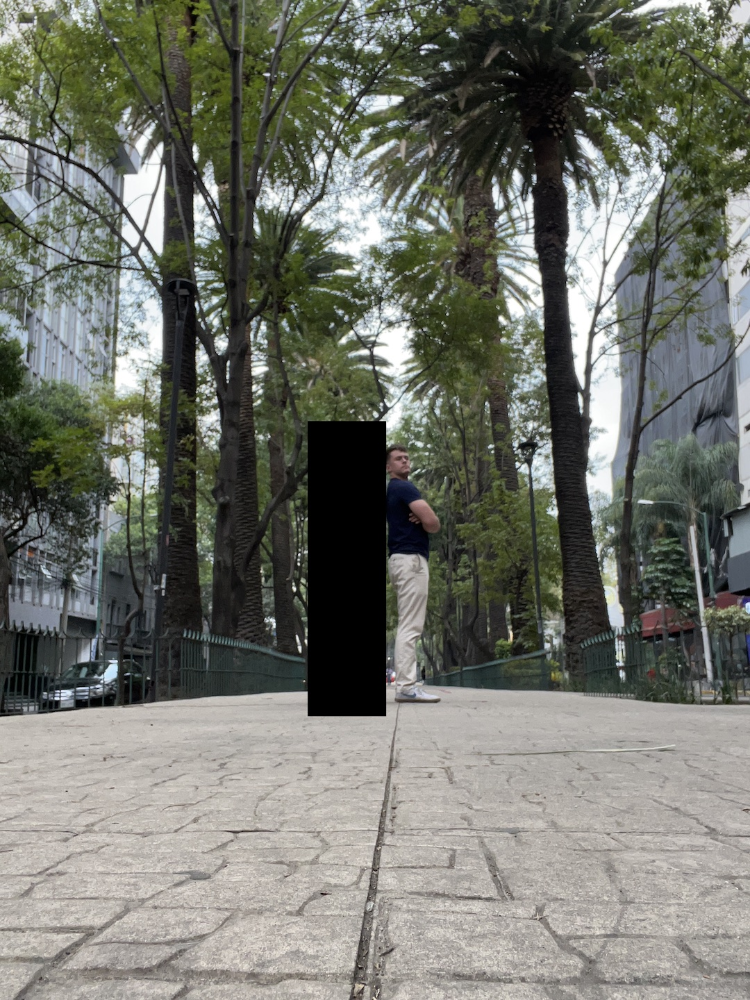

Mexico City trip report from 04-08 May 2023.
My friend, C, and I touched down in Mexico City (Ciudad de México, or CDMX, for short) around 2:00pm local time, getting a drawn-out greeting from the sprawling city while still in the air. Getting through immigration was painless. The Uber was a meager $15 to travel the 45-minute, 15 km distance across the city to Roma/Condesa area.
And what an introduction to the city it was. We passed beautiful murals painted on the sides of buildings, consisting of inspirational quotes and pictures relating to Mexican culture or history. Young children came up to the car attempting to sell us candies. A guy was getting a haircut in the back of a box truck parked on the side of the road. Buildings were painted all sorts of vibrant colors, giving a certain personality that many cities, especially the one I live in, severely lack. The apparent wealthiness of the neighborhoods increased as we continued west, eventually peaking in Roma (but growing as we went to Condesa then Polanco).
Yet our hotel, Hotel Royal Reforma, despite being in a nice, safe area, was surrounded by both regular and what I'll call "militarized" police. The militarized units were on the back of pickup trucks and some carried fully automatic rifles with a combination of 9 mm and (seemingly) 5.56 (based on magazine size). They looked relaxed and carefree as they joked around with each other, instantly calming our nerves and telling us it's probably just for show (which was later confirmed by a local). Normal police cars roamed around with their lights on to give more of a roaming presence.
Lunch was at Asaderos Grill and consisted of empanadas and their mixed taco plate: carne asada, chicken, and papas (potatoes). A Modelo washed everything down. It was here that I realized English wasn't as ubiquitous as I expected nor my friends had made it out to seem. No one working at the restaurant spoke English besides the basics of "thank you" and such. I was helpless as I pointed at the menu and awkwardly smiled while C and the waiter had a conversation. Sheeeeeeeeeeit.
We walked south to the neighborhood of Condesa and marveled at the landscaping. Trees were everywhere. And they weren't small, hastily-planted just to satisfy some minimum amount of green requirement. They were massive, mature, well-established, a member of the neighborhood protecting other residents from sun and rain and wind. They were beautiful. They lined the sidewalks on either side of the street and in the middle where a nice walking path was. My city has very little in the way of trees in its Condesa-like area. Maybe a few shrubs or some small, thin trees here and there, but nothing near the scope and scale of what CDMX offered.
After a few random turns here and there we stumbled upon Parque México and Parque España. Both were beautifully landscaped and one even had a small calisthenics park, so naturally I had to knock out 20 pull-ups to flex on the locals (and send to my cousin). Dinner was at the nice terrace restaurant Broka. We headed straight back to the hotel for an early night due to both of our early mornings.
Our 11-hour slumber had us recharged and ready for a long day of walking. We grabbed coffee (or in my case, a chai latte medio con leche de avena) at Tierra Garat, a Mexican coffee chain. With caffeine pumping through our veins we made the hour-long walk to Tree of the Victorious Night (formerly known as Tree of the Sad Night, depending on who you ask) where we were to meet up with our food guide. I had booked a food tour through Culinary Backstreets at the recommendation of tens or hundreds of Redditors via upvotes.
Here's a snippet of the description of the Azcapotzalco tour we took:
We will begin our day, as much of the neighborhood does, with a cafe de olla, spiced coffee, and a piece of sweet bread. Our second breakfast will be something more extraordinary: huevos encamisados, enchiladas, freshly-made juices as well as other incredible treats at a family-run backstreets restaurant that also happens to be one of Mexico City’s best. Later on, there will be succulent offal tacos, a reminder of slaughterhouses that were once located here. We’ll also stop into an artisanal tortilleria for a deep dive into the production of this most elemental of Mexican foods along with a tasting. And at a 3rd-generation street stand we will sample drinks that trace their roots to Aztec times. We’ll finish up in a cantina opened some 110 years ago by a family from Italy, where we’ll try the house cocktail and small dishes that reflect both classic Mexican traditions and the founders’ European roots. Once complete, an understanding of Azcapotzalco’s collage of foods and landscapes will emerge, showing the multiple sides of this unexplored neighborhood – one with perhaps the strongest personality in all of Mexico City.
This was way more fun than the above paragraph let it on to be. First stop was Nicos. I'm not a coffee drinker by any means but the spiced coffee was heavenly. Couple that with some sweet bread, egg-mole scramble, fried plantains, and chilaquiles and we got a superb breakfast. We then had a refreshing mango popsicle from a small shop, the perfect treat to satisfy a sweet tooth and cool us off as the sun made its way out.
A small tortilleria tour and tasting was next. We saw how the "dough" (there's another word I'm forgetting) was made and fed into the machine. Our guide explained how Mexican corn tortillas contain a large amount of folic acid, which has been found to help decrease birth defects. I thought of another point: tortillas often act as a food delivery vehicle. They transport vegetables and meat in a conveniently-wrapped package that is arguably different from the same ingredients just à la carte.
Onward to the sketchiest place we had been—and ultimately, would go—thus far! Pulque, or Mexican kombucha as the guide called it, is a historical Mexican drink made from the fermented sap of an agave plant. So naturally we drank it under a highway bridge out of obviously dirty plastic containers. You expect me to go to an actual restaurant? Our guide's explanation as to why we chose this place? "This family has been coming out here for a few generations." I was and still am skeptical of this claim, but whatever, I didn't get sick the week after so it was probably fine. We had a couple of different flavors out of a clay shot glass using for sampling: almond, papaya, lime, and some more I can't remember. A few "salud"s were cheered and on we went for a "surprise" taco, which turned out to be cow liver, which turned out to be delicious, which also disgusted pretty much everyone else there. (I think there were only two others who ate it.)
From here we stopped at shopping center completely covered in murals and artwork and graffiti. Some picture here and there and a restroom pit stop left us satisfied and ready to move on to eat some petrolitas (I'm spelling or remembering it wrong, but it's something like this), or Mexican pizza (again, the guide's words, not mine!). Petrolitas has a thick tortilla base, black beans, cheese, and salsa verde or salsa rojo. Dos Equis was the drink of choice. I chatted with the Canadians about their Calgary Stampede, one of the "top 10 parties in the world".
A quick journey deep below the main streets and a jump onto the Mexico City metro got us to our next destination with a couple of minutes.
I've made it a point to explain to people that I absolutely got my money's worth out of this for a few reasons. First, the food (obviously). We had quite a bit of food and drink throughout the day. Second, the lack of stress. There was no analysis paralysis from figuring out where or what or how to eat; we simply followed our guide and ate what he told us to if it was appealing and there was room in our stomachs. Third, the knowledge and entertainment value. While a small minority of the tour's information stuck with me, it was still fun to learn about in the moment. Did you know most of the local town gossip happens while in line at the tortilleria? Who knew! It was also fun meeting the Canadian and English couple also on the tour with us. Fourth, I had food and drinks from places I would have never visited without the group. What non-local would stop at the dirty pulque stand under a highway bridge?!